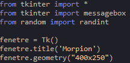
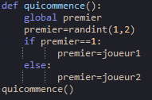
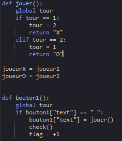

Comment avons nous crée le jeu?
Tout d'abord, nous sommes parti sur capytale pour s'aider des lecons et des exercices, la majeur partie du programme l'avons fais a l'aide de nos connaissances et des lecons.Ensuite nous sommes parti quelques commandes que nous n'avions pas encore appris sur internet, principalement sur
De plus, nous nous échangions nos programmes via l'application replit.com, cela fut très utile dans le déroulement du programme car un de nous deux s'occupait du programme intérieur du morpion(Salim), l'autre de l'interface graphique(Ivan).Enfin lorsque nous avions fini le programme, nous l'avons tester sur EduPython, il nous a fallu plusieurs essais pour parvenir à obtenir notre morpion du fait que quelques erreurs étaient présente.
Explication du programme

On a d'abord commencer pas introduire les modules néccesaires(messagebox,randint), puis on a crée la fenetre
On a ensuite crée une def quicommence pour savoir qui commencera la partie


On a ensuite créé une def jouer pour faire fonctionner notre morpion et 9 bouttons tous identiques pour pouvoir placer les X et les O sur les cases